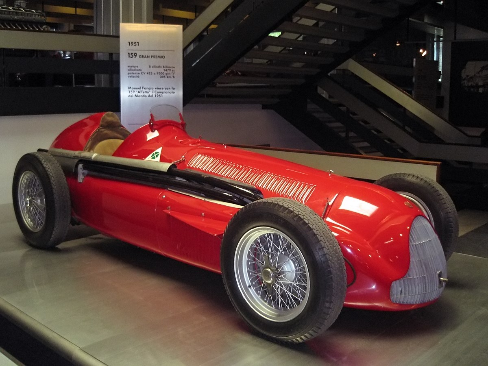

The Formula One series originated with the European Championship of Grand Prix motor racing of the 1920s and 1930s. The formula is a set of rules that all participants' cars must meet. Formula One was a new formula agreed upon after World War II during 1946, with the first non-championship races being held that year. The first one, the first Formula 1 race ever, was the Turin Grand Prix. A number of Grand Prix racing organisations had laid out rules for a world championship before the war, but due to the suspension of racing during the conflict, the World Drivers' Championship was not formalised until 1947. The first world championship race was held at Silverstone, United Kingdom in 1950. A championship for constructors followed in 1958. National championships existed in South Africa and the UK in the 1960s and 1970s. Non-championship Formula One events were held for many years, but due to the increasing cost of competition, the last of these occurred in 1983. On 26 November 2017, Formula One unveiled its new logo, following the 2017 season finale in Abu Dhabi during the Abu Dhabi Grand Prix at Yas Marina Circuit. The new logo replaced F1's iconic 'flying one', which had been the sport's trademark since 1993.
The early years and the continuation of pre-WWII supercharged engines (1946–1950)

The era of factory Italian and Mercedes front-engine cars (1950–1957)
The Motorcycle World Championships was introduced in 1949. In 1950, the FIA responded with the first ever official World Championship for Drivers. The championship series, to be held across six of the 'major' Grands Prix of Europe plus the Indianapolis 500, was in effect a formalization of what had already been developing in Grand Prix racing during the previous years. Italian teams of Alfa Romeo, Ferrari, and Maserati were best positioned to dominate the early years. Other national manufacturers – such as the French manufacturer Talbot or the British BRM – competed, although less successfully. A number of private cars also took part in local races. The Italian and German factory teams in those days often employed 2 to 3 drivers whose nationality was the same as the team's and at least 1 foreign driver; for example the Alfa Romeo team in 1950 consisted of Italian drivers Giuseppe Farina, Luigi Fagioli and Piero Taruffi; and Argentine driver Juan Manuel Fangio. Alfa Romeo dominated all before them in the 1950 season, winning every race bar one in the championship with the pre-war "Alfetta" 158s. The sole exception was the Indianapolis 500, which was part of the championship, although not run to Formula One regulations and rarely contested by the European teams. The race would never be important for Formula One and was no longer part of the championship after 1960.
Nino Farina won the inaugural championship, Juan Manuel Fangio taking it in 1951 with the Alfa-Romeo 159, an evolution of the 158. The Alfetta's engines were extremely powerful for their capacity: In 1951 the 159 engine was producing around 420 bhp (310 kW) but this was at the price of a fuel consumption of 125 to 175 litres per 100 km (2.26 to 1.61 mpg imp/1.88 mpg to 1.34 mpg US).[3] Enzo Ferrari, who had raced the Alfettas before the war, and his engine designer Aurelio Lampredi, were the first to understand that the 1.5-litre supercharged engine was a dead end: Any increase in power meant more fuel to carry or more time lost in the pits for refuelling, For the last races of 1950 Ferrari sent his 1.5-litre supercharged 125s to the museum, and fielded the new V12 4.5-litre normally aspirated 375s. With a fuel consumption of around 35 litres per 100 kilometres (8.1 mpg‑imp; 6.7 mpg‑US) the 375s offered fierce opposition to the Alfettas towards the end of the 1951 season. Alfa Romeo, a state-owned company, decided to withdraw after a refusal of the Italian government to fund the expensive design of a new car. Surprisingly, Alfa Romeo involvement in racing was made with a very thin budget, using mostly pre-war technology and material during the two seasons. For instance the team won two championships using only nine pre-war built engine blocks. No Alfa Romeo, a supporting cast of privateer Lago-Talbot entries and an almost undriveable, unreliable BRM would make Ferrari would last until 1954 before switching to 2.5-litre atmospheric engines. Major manufacturers were already working to develop cars for the future regulation and it was obvious that nobody would develop a new car for only two years. The promoters of the World Championship Grands Prix, mindful of the lack of serious competition for the Alfettas, eventually all adopted Formula Two regulations for two years. However, Ferrari's dominance went on with the light 4-cylinder powered 500s, bringing Italian Alberto Ascari his two championships in the 1952 and 1953 seasons. Ferrari's Formula One cars continued to race very successfully in non-Championship Formula One and Formule Libre races through this period. Ironically, during this period the only World Championship race for which Formula One cars were eligible was the Indianapolis 500. In 1952 Ferrari entered four Formula One 375s with Alberto Ascari as lead driver, but with little success. Discounting the Indianapolis 500, the World Championship was entirely based in Europe until 1953 when the season opened in Argentina. Since then there has always been at least one race outside Europe.
 As planned, the World Championship races returned to Formula One regulations for the 1954 season, now based on a new 2.5-litre atmospheric engine regulation. This successfully brought more entrants to the field. Lancia and Mercedes-Benz came to the formula, hiring the best drivers of the era: Ascari for Lancia, Fangio for Mercedes. Featuring desmodromic valves, fuel injection, magnesium and exotic alloys parts, "streamlined" bodywork and other advanced features, the brand new Mercedes began the 1954 season with Fangio taking pole position at the "Grand Prix de l'ACF" at Reims-Gueux with the first lap over 200 km/h (124 mph) in Formula One before winning the race after a duel with other Mercedes driver Karl Kling, who finished second. The Mercedes cars swept the next two seasons with Fangio winning all but three of the races. However, at the end of the 1955 season Mercedes vanished as swiftly as they had come. They had proven the superiority of their technology, but the crash of one of their sportscars that year at Le Mans, killing 83 people, was also a significant factor. The company would not return to Formula One for forty years.[4] After Le Mans, four of the year's remaining Grands Prix were cancelled. The Monaco Grand Prix saw a spectacular incident when Ascari and his Lancia crashed into the harbour after missing a chicane. Ascari was pulled out of the water alive and apparently well. However, there was speculation over an undetected internal injury when four days later Ascari was killed at Monza while testing a sportscar. After Ascari's death, Lancia followed Mercedes out of the category, passing their engines, cars, information and technology to Ferrari. The 1956 season saw Fangio make good use of the Lancia-born Ferrari to win his fourth championship. Driving for Maserati, he took his fifth championship in the 1957 season, a record which would not be beaten for 46 years. Ferrari developed a new engine for 1957, the V6 "Dino" engine, it was competitive by 1958 and Mike Hawthorn became the first British F1 World Champion, though his victory was short-lived, he died the following winter.